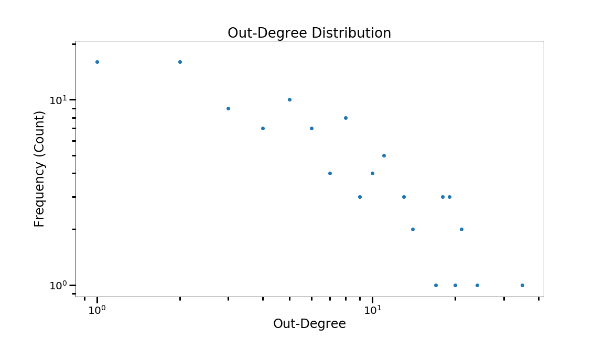
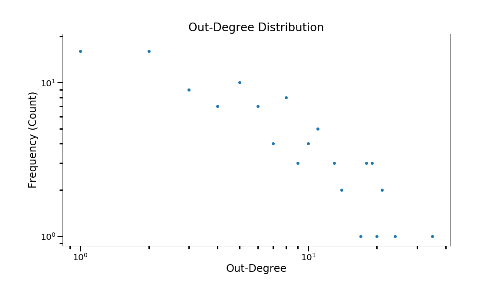

Introduction
Star Wars, a franchise of epic proportions with devoted fans around the entire planet. This universe filled with wonder and intrigue, created by George Lucas, has enjoyed decades of prosperity with 10 live action filmed made, 1 animated film and countless of animated tv episodes. How does the social network of the canon Star Wars universe look like? This webpage compares the social network for each film. It also takes a look at the social network the occurs in the films and TV-series as a whole. Additionally text analysis is performed to find the words that characterize each movie and TV-series, and to build a timeline of how the sentiment in the Star Wars galaxy changes over time.
Data Acquisition
Before the social network of the Star Wars universe can be built the characters that occur and how they link to each other has to be identified. To do that a reliable data source is needed. The only right place to go is Wookieepedia the Star Wars wiki. The list of characters that appear in each film and each episode of the Clone Wars and REBELs TV-series was excracted from the appropriate Wookieepedia articles. The list of characters are used as nodes in the Star Wars social graph. To find out how characters are connected the Wookiepedia articles about each character are analyzed. If there exists a link from the article of one character to the article of another a link is created between those two characters. Additionally a list of affiliations is created for each character, i.e. is the character affiliated with the Jedi Order, Sith, Republic, etc. To find out what words characterize each movie and TV-episode, the scripts are analyzed and Word Clouds are constructed based and the TF-IDF. For sentiment analysis the LabMT wordlist is used along with the hedonometer method from Temporal Patterns of Happiness and Information in a Global Social Network: Hedonometrics and Twitter.Network Analysis
Star Wars: Episode I - The Phantom Menice
Nodes:
Edges:
Edges:
Degree distribution
 

We see that the In-Degree distribution is similar to a power-law distribution. That means that we have a large amount of nodes with low degree and a small group of nodes with a high degree. The same can be said about the Out-Degree distribution, however the out-degree deviates more from the power-law than the in-degree does.
| Name | In-Degree |
|---|